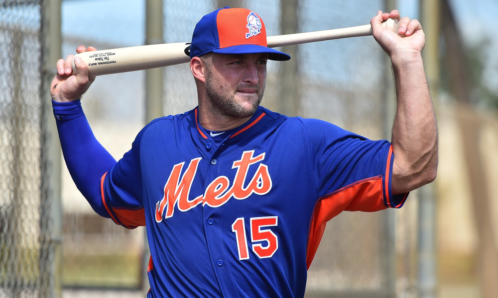

This week in class we learned how to implement multiple properties to a webpage:
Syndergaard gained 20 pounds of muscle in the offseason and told the media he wants to throw even harder this year.
>Yoenis Cespedes is one of the elite power-hitters in the MLB and just signed a huge contract.
>Matt Harvey, coming off the second major injury of his career, looks to get back on track in 2017.
>The talented Mets pitching staff has had trouble staying healthy in recent years.
>Tim Tebow, who signed with the Mets minor league system last year, hit 9 home runs in BP on February 27th.
>